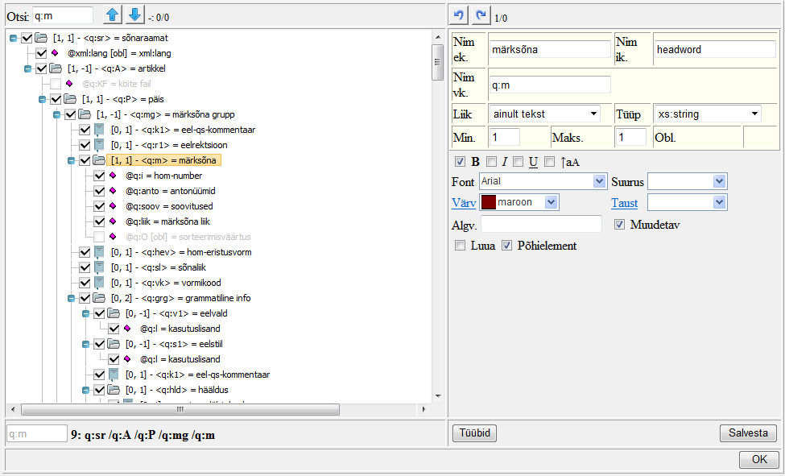

Skeemi genereerimine
Sõnastiku XML skeemi ehk struktuuri kirjeldab skeemifail (.xsd). Skeemi saab EELexis koostada sisseehitatud skeemieditori abil, mille avamiseks klõpsa Sõnastiku tööriistade nupul ja vali Skeemi genereerimine.
ja vali Skeemi genereerimine.Skeemieditor
Skeemieditori aken koosneb kahest osast: vasakpoolsel on näha sõnastiku skeem puuna, sisaldades skeemi elemente ja atribuute. Kui mõnel neist klõpsata (linnukese puudumisel lisada see elemendi nime ees olevasse kastikesse, siis element muutub klõpsatavaks), siis avaneb paremal pool võimalus selle elemendi/atribuudi omadusi või kirjeldust muuta. Puu kohal on tekstiväli elementide-atribuutide nime järgi otsimiseks (noolenupud otsivad vastavalt aktiivsest elemendist ettepoole või tahapoole). Puu all on näha aktiivse elemendi rada.
Kui kasutasid sõnastiku loomisel mõnd olemasolevat sõnastikupõhja, siis on skeemi algus juba olemas (vt Eeldefineeritud elemendid.) Kasutaja (peatoimetaja) ülesandeks on enne sõnaartiklite lisamist skeem lõpuni välja mõelda ja vajalikud elemendid-atribuudid luua ning kirjeldada.
NB! Kui muuta sellise sõnastiku skeemi, kus juba sõnaartiklid sees, siis on kindlasti vajalik pärast muutmist kogu sõnastik valideerida! Vt Köite valideerimine. Kui ei valideeru, tuleb kas skeemimuutus tühistada; kui ei valideeru üksik artikkel, siis tuleb see sõnastiku tööakna Toimetamisalal korda teha (vt Sõnaartikli muutmine); paljude artiklite muutmiseks on võimalik kasutada hulgiparandusi (vt Hulgiparandused).
Elemendi ja atribuudi tegemine nähtavaks
Kui puus elemendile/atribuudile klõpsamine ei ava parmal pool tema kirjeldust, siis klõpsa tema ees olevasse kastikesse linnuke - see muudab ta "nähtavaks" nii Skeemieditoris kui ka sõnastiku tööakna Toimetamisalal.Elementide-atribuutide lisamine, kustutamine, tõstmine
Elemente saab lisada olemasoleva elemendi (mitte atribuudi) ette, sisse ja järele. Seega klõpsa aktiivseks skeemieditori vasakpoolsel alal olevas puus element, mille suhtes soovid uut elementi paigutada, ja vali hiire paremkliki alt avanevast kontekstimenüüst vastav valik. Lisamisel on võimalik valida juba varem defineeritud (globaalselt EELexis või lokaalselt selle sõnastiku jaoks) elementide seast. (NB! Kontekstmenüü kõrvale avanevasse alamenüüsse liikudes tuleb hiirega olla täpne: liikuda soovitud valikult täpselt paremale kuni alamenüüni! Vastasel korral esimese menüü aktiivne valik muutub ja ilmub hoopis uue aktiivse valiku alamenüü.)Atribuudi lisamiseks tuleb aktiivseks klõpsata element, millele atribuuti looma hakatakse. Paremkliki alt avanevast kontekstimenüüst vali "Lisa atribuut". Skeemipuus eristab atribuuti elemendist tumeroosa rombikujuline ikoon.
Sama kontekstimenüü kaudu saab elemente-atribuute ka kustutada. Vihje: kui on vaja elementi või atribuuti puus uude kohta tõsta, siis mõistlikum vigade parandamise järjekord on nii: luua see element õigesse kohta (siis saab lisamise alamenüüst valida selle nime ja omadustega elemendi, jääb ära uue elemendi kirjeldamine) ja alles seejärel kustutada element valest kohast. Kui samas grupis juba on sellenimeline element, siis tuleb ikkagi enne kustutada ja alles seejärel uus luua.
Elemendi/atribuudi kirjeldamine
Uuele elemendile tuleb määrata tema omadused ja hea oleks anda ka tema kirjeldav nimi. Seda saab teha Skeemieditori parempoolsel alal.Kirjeldav nimi võib koosneda mitmest sõnast ja sisaldada täpitähti. Vajaduse korral võib lisada inglis- ja venekeelsed nimed.
Liik: Vali ainult tekst, kui see element ei oma allelemente, vaid ainult sisu.
Vali ainult elemendid, kui kirjeldatav element hakkab sisaldama ainult teisi elemente ja mitte sisu (teksti).
Vali tekst JA elemendid, kui see element hakkab sisaldama nii teksti kui allelemente.
Tüüp - saad valida süsteemsete tüüpide (string, boolean, dateTime jne) või EELexis varem loodud tüüpide (sh loendite) seast, ent võid luua ka oma tüübi (selleks vt Loendid ehk tüübid). Omaloodud tüüp käitub valikmenüüna (loendina): defineerid sobivad väärtused ja Toimetamisalal kirjet sisestades ilmub selle elemendi juurde hüpikmenüü tüübis (loendis) määratud valikutega. Näiteks paljudes sõnastikes kasutusel olev element valdkond (x:v) on defineeritud loendina, kus võimalikd väärtused on infotehnoloogia, meditsiin, astronoomia jne.
Min. ja Maks. määravad elemendi korduvuse: mitu eksemplari sellest elemendist igas märksõnaartiklis on minimaalselt ja mitu võib olla maksimaalselt. Lõpmatuse tähis EELexis on -1.
Obl. Kui linnuke, siis see atribuut on kohustuslik ehk obligatoorne.
B, I, U, aA, Font, Suurus, Värv, Taust - skeemieditoris saab määrata, kuidas element/atribuut Toimetamisalal välja näeb.
Algv. - defineeri elemendi või atribuudi algväärtus; uue märksõnaartikli loomisel täidetakse see väli siis automaatselt algväärtusega.
Muudetav - kui linnuke, siis saab elemendi sisu Toimetamisealal muuta, linnukese puudumisel ei saa.
Luua - kui linnuke, siis ilmub element Toimetamisalale koos allapoole suunatud noolega vasakul, millest teda saab avada.
Põhielement- (vaid elementidel) kui linnuke, siis on Toimetamisalal selle elemendi jaoks tekstiväli kohe avatud. Linnukese puudumisel see element Toimetamisalal nähtav on, ent tekstiväli tuleb avada vasakpoolse noolenupuga (elemendi ees). Põhielemendiks on mõistlik element teha siis, kui ta esineb paljudes artiklites.
Tüübid - vt Loendid ehk tüübid
Salvesta - salvestab siiani tehtud muudatused, aken jääb avatuks. Luuakse .xsd fail.
Skeemieditori sulgeb nupp OK. Kui töö oli salvestamata, küsitakse, kas on vaja salvestada enne sulgemist.
Kui sõnastiku sisu (s.o märksõnaartiklid XML failina) plaanitakse EELexi importida, siis tuleb olla veendunud, et andmed vastaksid selle sõnasitku skeemile!